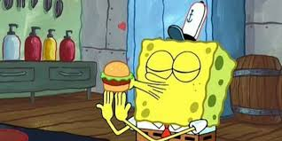
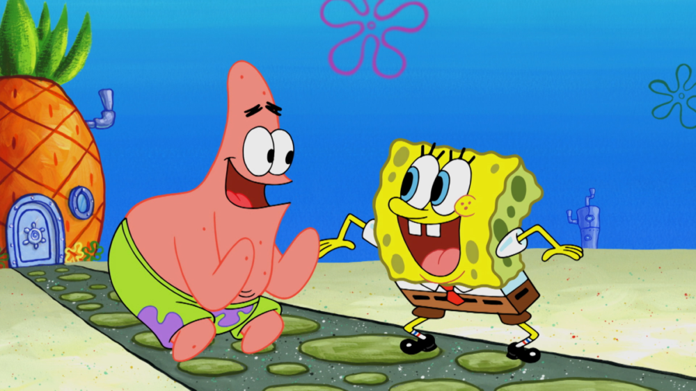
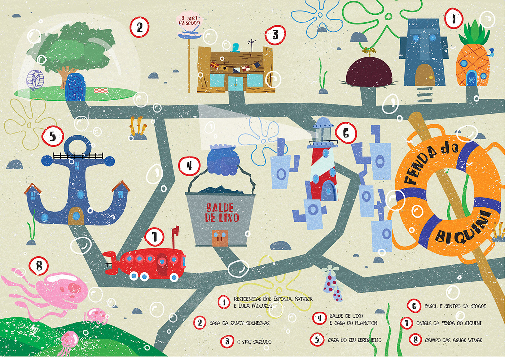

Sobre Bob Esponja
Bob Esponja Calça Quadrada é uma das séries animadas mais conhecida da televisão.
A série foi criada pelo biologo marinho
Stephen Hillenburg e estreou na Nick em .
A historia acompanha um personagem extremamente
otimista que vive no fundo do mar na cidade da Fenda do Biquíni.
Bob Esponja trabalha no restaurante Siri Cascudo Fazendo hambúrgeres de siri e vive diversas aventuras com seus amigos
Patrick, Lula Molusco, Sandy, Seu Siriguejo e entre outros. A série mistura humor simples, situações absurdas e personagens
muito marcantes, o que ajudou o programa a se tornar um sucesso mundial, não so com as crianças que era seu publico alvo mais tambem com os adultos.
"Bob Esponja Calça Quadrada é uma série animada que se tornou um dos programas mais populares da Nickelodeon."
Personagens e Características
Personagens principais
- Bob Esponja
- Patrick Estrela
- Lula Molusco
- Sandy Bochechas
- Seu Sirigueijo
Ordem de popularidade dos personagens
- Bob Esponja
- Lula Molusco
- Sra. Puff
- Plankton
- Patrick
glossário do universo da série
- Fenda do Biquini
- A cidade submarina onde a maioria das historias acontece.
- Siri Cascudo
- O restaurante onde Bob Esponja trabalha fazendo hambúrgueres, onde o dono é o Seu Sirigueijo
- Hambúrguer de Siri
- O prato mais famoso da série e o principal produto do restaurante.
Personagens principais de Bob Esponja
| Personagem | Espécie | Profissão | Característica |
|---|---|---|---|
| Bob Esponja | Esponja do mar | Cozinheiro | Extremamente otimista |
| Patrick | Estrela do mar | Nenhuma | Muito ingênuo |
| Lula Molusco | Polvo | Caixa do Siri Cascudo | Mal humorado |
| Sandy | Esquilo | Cientista | Inteligente e corajosa |
Galeria



Informações completas sobre Bob Esponja na Wikipedia
Site oficial da Nickelodeon